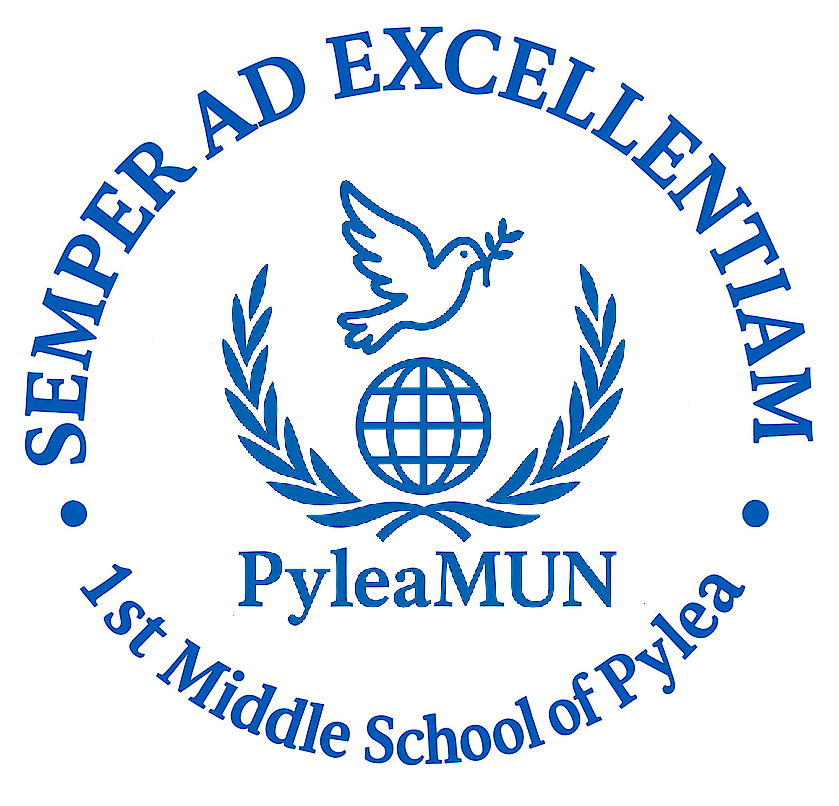

Delegate Manual
Dear Delegates,
Welcome to the PyleaMUN experience! With this manual, we aim to provide you with a comprehensive introduction to the Rules and Procedures of PyleaMUN and to assist you throughout your MUN preparation journey.
Inside, you will find all the essential information you need, along with helpful guidelines and tips to enhance your skills as Model United Nations participants. Whether you're a first-time delegate or a seasoned MUNer, this manual is designed to support your growth, confidence, and effectiveness in debate.
We trust that this resource will prove valuable and we look forward to seeing well-prepared, diplomatic delegates who are ready to engage actively, think critically, and collaborate passionately in the search for impactful solutions.
Wishing you a productive and inspiring MUN experience,
The PyleaMUN Team
What is Model United Nations?
Model United Nations (Model UN or MUN) is an academic simulation of the United Nations in which students take on the roles of delegates representing various countries. Their goal is to address and resolve global issues by debating, negotiating, and collaborating---while faithfully reflecting the policies and viewpoints of their assigned nation.
What Should Delegates Do Before the Conference?
This section outlines all the essential steps you need to take as you prepare for PyleaMUN. We strongly recommend that you complete your preparation at least two weeks prior to the start of the conference, ensuring you are fully ready to participate effectively and confidently.
1. Choosing a Committee
Before attending PyleaMUN, you must first decide which committee you would like to join. Review the conference agenda carefully and select the committee and topic that interests you most. Your engagement and enthusiasm during the sessions often reflect how connected you feel to the topic.
2. Conducting Research
Every delegate is expected to conduct thorough research before the conference. This includes understanding the topics on the agenda and knowing your assigned country's stance on those issues. Informed delegates make impactful contributions to the debate.
Here's how to approach your research:
a) Understand the Country You Represent
Start by creating a Country Profile. You'll need a clear understanding of your country's geography, government, history, economy, foreign relations, and demographics. Consider the following questions to guide you:
- What is your country's official name?
- Where in the world is it located?
- What are its size and population?
- Who are its neighboring countries?
- What is its geographical and climatic profile?
- What is the country's history and founding date?
- What form of government does it have?
- Who are its allies and adversaries?
- What is the capital city and its significance?
- What is the ethnic composition and official language?
- How would you assess the quality of life?
- What is its GDP and major economic sectors?
- What are its key natural resources?
- What are its main imports and exports?
- Who are its primary trade partners?
b) Research the Background of Your Topic
Gain a foundational understanding of the issue you'll be discussing. Define key terms and explore the topic's origins, causes, and global impact. Questions to consider:
- What is the issue about?
- What are its root causes?
- Who is affected and how?
Note: Study guides will be made available on the PyleaMUN website a few months before the conference. However, these are a starting point---your own independent research is essential.
c) Understand Your Country's Policy
You are not representing your personal opinion, but rather the official stance of your assigned country. Make sure you understand your country's interests and priorities on the issue, and be prepared to defend them during the debates.
d) Stay Updated on Recent Developments
Research current events related to your topic. Being aware of the latest developments allows you to bring relevance and credibility to your arguments.
e) Explore Past International Actions
Review what has already been done at the international level to address the issue. This includes:
- UN resolutions
- International treaties and conventions
- Actions by NGOs and intergovernmental organizations
Understanding the history of international response helps you evaluate what has worked, what hasn't, and what gaps remain.
f) Develop Possible Solutions
This is perhaps the most important part of your preparation. Remember, the goal of MUN is to create realistic, practical, and effective resolutions. Think about what your country would support and propose as a solution---either domestically or globally. Creativity is encouraged, but your ideas must be achievable and align with your country's policy.
Useful links
Country research
- CIA World Factbook
- https://www.cia.gov/library/publications/the-world-factbook/index.html
- UN Member States
- http://www.un.org/depts/dhl/unms/
- International MUN Association (IMUNA)
- http://www.imuna.org/resources/country-profiles/
- US Department of State
- http://www.state.gov/r/pa/ei/bgn/index.htm
- United Nations
- http://www.un.org/
- UN Systems: UN Organizations
- http://www.unsceb.org/directory
- BBC Country Profiles
- http://news.bbc.co.uk/2/hi/africa/country_profiles
- http://news.bbc.co.uk/2/hi/americas/country_profiles
- http://news.bbc.co.uk/2/hi/asia-pacific/country_profiles
- http://news.bbc.co.uk/2/hi/europe/country_profiles
- http://news.bbc.co.uk/2/hi/middle_east/country_profiles
- http://news.bbc.co.uk/2/hi/south_asia/country_profiles
Recent Events
- BBC News http://www.bbc.co.uk/
Past Actions
- UN Official Documents
- http://www.un.org/en/documents/ods/
- UN Treaty Collection
- https://treaties.un.org/
- UN Security Council Documents
- http://www.un.org/en/sc/documents/sgreports/2015.shtml
- Economic and Social Council Documents
- http://www.un.org/en/ecosoc/docs/report2015.asp
Other
- United Nations
- http://www.un.org/en/index.html
- General Assembly
- http://www.un.org/en/ga/
- Economic and Social Council
- https://www.un.org/ecosoc/en/
- International Court of Justice
- http://www.icj-cij.org/homepage/index.php?lang=en
- UN Children's Fund
- http://www.unicef.org/
- UN Educational, Scientific and Cultural Organization
- http://en.unesco.org/
- UN Environment Programme
- http://www.unep.org/
- UN High Commissioner for Human Rights
- http://www.ohchr.org/EN/pages/home.aspx
- UN High Commissioner for Refugees
- http://www.unhcr.org/cgi-bin/texis/vtx/home
- UN Commission on Sustainable Development
- https://sustainabledevelopment.un.org/index.shtml
- UN Commission on the Status of Women
- http://www.unwomen.org/en/csw
- Food and Agricultural Organization
- http://www.fao.org/home/en/
- International Atomic Energy Agency
- https://www.iaea.org/
- International Criminal Court
- https://www.icc-cpi.int/
- International Labor Organization
- http://www.ilo.org/global/lang--en/index.htm
- International Monetary Fund
- http://www.imf.org/external/index.htm
- World Bank
- http://www.worldbank.org/
- World Health Organization
- http://www.who.int/en/
- World Trade Organization
- https://www.wto.org/
- UN Statistics Division
- http://unstats.un.org/unsd/default.htm
- Joint UN Programme on HIV/AIDS
- http://www.unaids.org/en/
- Best Delegate
- http://bestdelegate.com/research/
Policy Statement
The policy statement is a concise speech summarizing your understanding of the topic while clearly outlining your country's policy. It should include background information on your country's position, its current stance, and its desired outcomes related to the issue at hand. The statement must not exceed one minute in length and will be presented at the start of the lobbying session.
Sample Policy Statement
Topic: Safeguarding the rights of refugees Proposed by: Ethiopia
The government of Ethiopia maintains an open door policy on the issue of refugees and continues to allow humanitarian access and protection to those seeking refuge on its territory. More than 630,000 refugees are accommodated, mainly in camps, throughout the country. However, provisions under Ethiopian law for refugees' local integration are very limited. The country participated in the 1951 Convention, but maintains reservations regarding refugees' employment (Article 17 of the Convention). Yet, it supports an out-of-camp scheme that allows refugees to live outside camps and engage in informal livelihood opportunities. In addition, an all-out effort is being exerted to provide education to as many refugees as possible. Also, Ethiopia took part on the 1969 OAU Convention, governing the specific aspects of refugee problems in the African region. Last but not least, considering that Ethiopia is a less economically developed country, she is making all efforts and cooperates with international organizations in order to safeguard the rights of refugees, IDPs and asylum seekers.
Draft Resolution
Once you have completed all the previous steps, you will need to prepare a draft resolution. This document outlines the proposed actions your country believes will effectively address the issue. You are expected to bring this draft to the conference and aim to have as many of your clauses as possible included in the final resolution. The resolution consists of three main sections and must follow a specific format.
- Heading
FORUM: (your Committee)
QUESTION OF: (your topic)
SUBMITTED BY: (your country)
2. Preambulatory clauses
These clauses form the introduction of the resolution and provide context and background on the issue being addressed. Each clause begins with a preambulatory phrase and ends with a comma. They are not open to debate. Preambulatory clauses may include:
- References to previous UN resolutions, treaties, or conventions relevant to the topic
- Citations from the UN Charter or other international laws and frameworks
- Statements from the Secretary-General or other UN bodies and agencies
- Key facts, historical context, and the significance or impact of the issue
- Examples of past efforts at the national, regional, or non-governmental level to resolve the issue
3. Operative Clauses
These clauses outline the specific actions and solutions your country proposes. Each operative clause must be numbered and conclude with a semicolon (;), except for the final clause, which ends with a period (.).
Resolutions must not include specific financial amounts, though they may mention potential sources of funding in general terms.
Sample Resolution
FORUM: ECOSOC
QUESTION OF: International Cooperation on criminal Matters, with a focus on cyber crime
SUBMITTED BY: Japan, Greece, France, United States of America
Guided by the principles of the "Universal Declaration of Human Rights" signed on the tenth of December 1948,
Being a country strongly affected by cybercrime,
Having ratified the Budapest Convention on cyber crime,
Operative clauses
- Endorses the international cooperation and collaboration of all member states in order to counter cyber crime;
- Requests that member states to incorporate in their national legislation, in conformity with their legal systems, measures for combating cyber crime such as but not limited to:
- Passing strict laws against cyber crime which will:
- Protect the confidentiality and integrity of data and personal information,
- Ensure that criminal offences regarding the use of computers are punishable by effective, proportionate and dissuasive sanctions,
- Criminalize abuses of telecommunications and computer systems,
- Ensure that criminals are penalized and thus put an end to impunity,
- Guaranteeing rapid access to electronic data during criminal investigations;
Font: Arial, Underlined
Size: 12
List of preambulatory clauses
Acknowledging Affirming Alarmed by Approving Aware of Bearing in mind Believing Confident Congratulating Contemplating Convinced Declaring
Deeply concerned Deeply conscious Deeply disturbed Deeply regretting Desiring Emphasizing Expecting
Expressing its appreciation Expressing its satisfaction Fulfilling Fully aware
Further deploring Further recalling Guided by
Having adopted Having considered Having devoted attention
Having examined Having received Keeping in mind Noting with appreciation Noting with deep concern
Noting with regret Noting with satisfaction Noting further Observing Pointing out Reaffirming Realizing
Recalling Recognizing Recognizing Referring Seeking Taking into consideration Taking note Viewing with appreciation Welcoming
List of operative clauses
Accepts Affirms Approves Asks Authorizes Calls for Calls upon Condemns* Confirms
Decides*
Declares accordingly* Demands*
Draws the attention Deplores
Designates Encourages Endorses Emphasizes Expressing its appreciation Expressing its hope Expressing its satisfaction Further invites Further proclaims
Further recommends Further requests
Has resolved Hopes Invites
Notes Proclaims Proposes Reaffirms Recommends Regrets Requests Seeks
Solemnly affirms Strongly condemns* Supports
Suggests Takes note of Transmits Trusts
Urges
*All operative clauses in bold can only be used by the Security Council
What is done during the Conference?
In Brief: Committee Procedure
1. Each committee is overseen by a Main Chair or President, along with two Co-Chairs or Deputy Presidents, who are responsible for guiding the discussions. The session begins with a Roll Call to take attendance.
2. The committee then enters the Lobbying phase, during which delegates form alliances and submit their final draft resolutions.
3. Once approved by the Approval Panel, each draft resolution is discussed and debated one at a time.
4. Delegates have the opportunity to submit amendments to the draft resolutions.
5. After the time allocated for closed debate on each amendment, delegates will vote on them. Following the open debate on a resolution, a vote will be held on the resolution as a whole. This process will be repeated for each submitted draft resolution until all have been addressed.
LOBBYING
The lobbying process is a crucial stage in every MUN conference, as it is when the final draft resolutions are developed. At PyleaMUN, lobbying will take place on the second day of the conference.
During this phase, delegates are free to move around the room, collaborate, and negotiate with others to form alliances and work towards a consensus---always keeping their country's policy in mind. This is the time to express your views, draft clauses, and build support for your ideas. A resolution requires signatures from at least one-third of the committee's members, and each delegate may sign only one resolution per topic.
Your goal is to convince other delegates that your clauses are effective so they are included in the final draft resolution---and ideally, to become the Main Submitter of the resolution. Success in lobbying comes from being proactive: presenting your proposals, initiating discussions, and leading coalition-building efforts.
Chairs will oversee the lobbying process to ensure productive collaboration. Once an alliance finalizes its draft resolution (at least one member should have a laptop), it must be formatted according to official guidelines (see page 8) and submitted to the Chairs for review. The Chairs will address policy-related issues, while the Approval Panel, will check formatting, grammar, and spelling. Note: The Main Submitter does not participate in the approval process. Once approved, the draft resolution is ready for debate.
DEBATE PROCEDURE
Debate is the stage where all draft resolutions are formally discussed. Your objective is to persuade the committee to vote in favor of your resolution.
PyleaMUN follows an open debate format for resolutions, meaning any delegate, once recognized by the Chair, may speak either in favor of or against the entire resolution. In contrast, closed debate is used for amendments, with designated time for arguments for and against each amendment.
Once lobbying concludes, the Chair will announce the beginning of the debate. Each resolution is given a specific time limit, which may be extended by the Chair if needed. The Admin Staff will circulate copies of the first resolution to all delegates. The Main Submitter will then read the operative clauses aloud and deliver an opening speech in support of the resolution.
Other delegates may take the floor to express support or opposition. After speaking, a delegate may:
- Yield time to questions and answers
- Yield to another delegate
- Yield to the Chair
- Or declare no yield: in this case, two delegates will each be granted 30 seconds to make comments on the speech or the topic raised.
AMENDMENTS
Delegates can also propose amendments, or changes, to the resolution. Once debate time on an amendment or resolution ends, the committee proceeds to the voting procedure. Delegates vote by raising their placards to indicate "in favor," "against," or "abstain." Co-submitters are not obligated to vote in favor of the resolution---they are simply supporting its discussion Amendments
Amendments are used to modify draft resolutions. An amendment is a written proposal that adds, removes, or alters an operative clause (note: preambulatory clauses cannot be amended). The purpose of amendments is to build broader consensus by refining the resolution's content.
The Chair decides when amendments will be discussed. Once an amendment is proposed, the Chair will read it aloud slowly and clearly so that all delegates can take note.
POINTS AND MOTIONS
Important: Only the Point of Personal Privilege (for audibility) may interrupt a speaker. All other points and motions must be recognized by the Chair and cannot interrupt.
POINTS
Point of Personal Privilege
- Concerns the comfort or audibility of a delegate
- Only interrupts a speaker if related to audibility
- Not related to content of the speech
- Not debatable and does not require a second
- Example: "Could the windows be opened? It's very hot."
Point of Parliamentary Inquiry
- A question to the Chair regarding the Rules of Procedure
- Cannot interrupt a speaker
- Example: "Could the Chair explain the term 'Open Debate Mode'?"
Point of Information to the Speaker
- A question addressed to the delegate currently holding the floor, if they agree to accept points of information
- Requires recognition by the Chair
- Must be asked while standing and in question form
- A brief statement may precede the question
- No direct conversation is permitted
- Example: "Could the delegate, as Main Submitter, clarify the impact of Clause 3?"
Point of Order
- Concerns a procedural error (e.g., mistakes in debate order or timing)
- Cannot interrupt a speaker
- Not debatable
- Must refer to something that has just occurred
- Example: "Is it in order for the delegate to yield the floor to another, since they were already yielded the floor by the previous speaker?"
Point of Information to the Chair
- A general question for the Chair
- May address issues outside other categories, such as logistics or clarification requests
- Examples: "What time is the lunch break?" or "Has the Darfur Liberation Army signed the Peace Agreement?"
Right of Reply
- A response to remarks that have harmed a delegate's national or personal integrity
- Cannot interrupt a speaker
- Disagreeing with another speech is not grounds for a Right of Reply
MOTIONS
Motion to Approach the Chairs
- Used when a delegate wishes to speak privately with the Chairs
- Cannot interrupt a speaker
Motion to Follow-Up
- Used when a delegate's question was not fully addressed or they need further clarification
- Only the delegate who initially asked the Point of Information may raise this
- At the Chair's discretion and cannot be overused
- Cannot interrupt a speaker
- Only one follow-up is allowed per instance
- Note: Direct delegate-to-delegate dialogue is not permitted
Motion to Move to the Previous Question
- Requests the end of debate and a move to voting
- During amendment debates, this means moving from time in favor to time against
- Can be proposed by the Chair or any delegate
- Cannot interrupt a speaker
- Requires a second and a 2/3 majority if objected to
- Chair may deny the motion if debate time still needs to be used
- The Chair must ask if there are any objections
Motion to Extend Debate Time
- Proposed by a delegate or the Chair
- Not debatable
- Requires a second and simple majority (or Chair's discretion)
- Useful if time runs out or guest speakers are present
Motion to Divide the House
- Applied when a vote results in a narrow or tied decision
- If accepted, delegates must vote again, but abstentions are not allowed
Motion to Reconsider a Resolution
- Only permitted in Specialized Agencies
- Requests a re-debate and re-vote on a previously discussed resolution
- Can only be entertained after all other draft resolutions have been debated
- Only valid if no other draft resolutions remain on the topic
- Requires a 2/3 majority and does not allow abstentions
- Not debatable
CLOSING REMARKS
Congratulations, Delegates! You're now ready to dive into the world of Model United Nations. We hope this manual has been helpful and given you a solid introduction to what PyleaMUN is all about. We look forward to seeing you fully prepared, actively engaged, and ready for meaningful debate.
Best of luck---and see you at the conference!
Warm regards,
The Secretariat